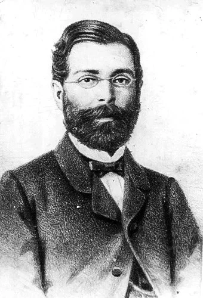
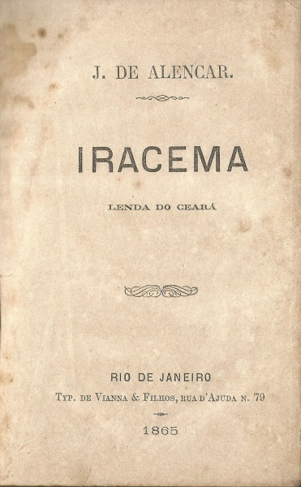
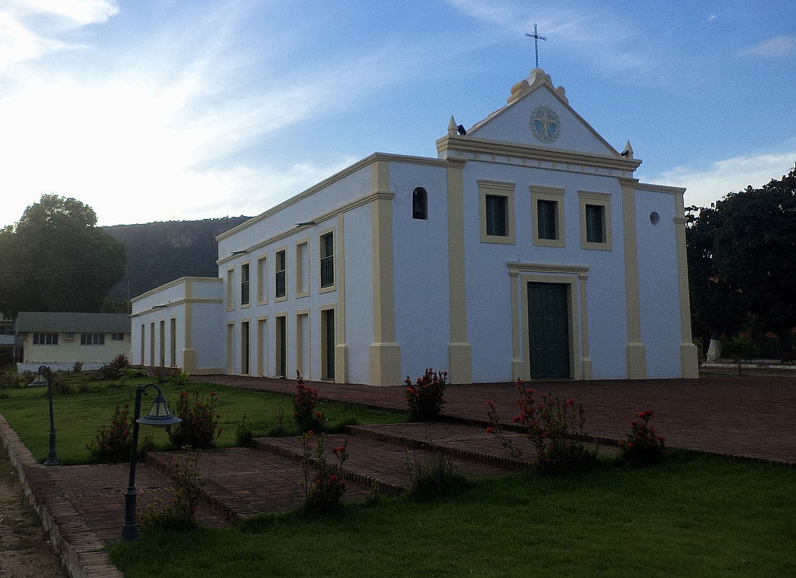
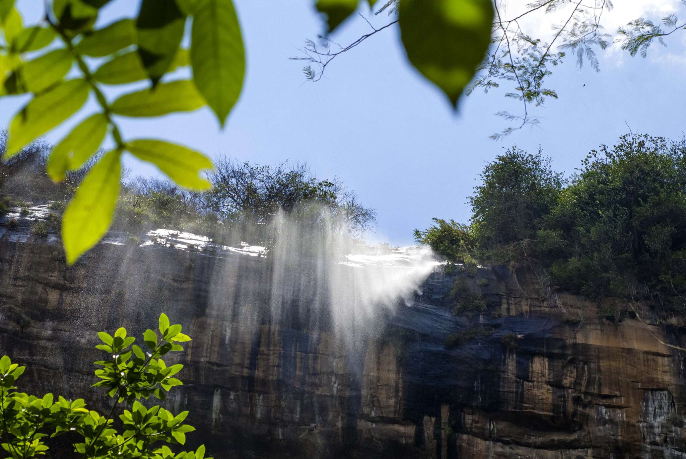

A História de Ipu e Iracema

A história de Ipu está profundamente ligada à lenda de Iracema, criada por José de Alencar. Ipu, no Ceará, é uma terra de origem indígena, conhecida pela famosa Bica do Ipu, a “água que cai do alto”, lugar de beleza natural e cheio de significados. Na obra “Iracema”, Alencar conta o amor entre a índia tabajara Iracema e o português Martim, um encontro que simboliza a união entre o indígena e o europeu, origem do povo brasileiro. Segundo a tradição, as lágrimas de Iracema teriam formado a Bica do Ipu, tornando a paisagem e a lenda inseparáveis. Assim, história, natureza e literatura se misturam para contar a alma do Ceará e o nascimento simbólico do Brasil.
Capítulo 1: José de Alencar


José de Alencar foi um dos maiores escritores do Brasil e um dos fundadores da literatura nacional. Nasceu em 1829, em Messejana, no Ceará, e desde jovem mostrou talento para a escrita. Formou-se em Direito, mas se destacou mesmo como romancista, dramaturgo e político. Alencar escreveu obras que buscavam mostrar a identidade do povo brasileiro, misturando natureza, cultura indígena e história.
Entre seus livros mais famosos estão “Iracema”, “O Guarani” e “Senhora”. Ele é considerado o principal autor do Romantismo brasileiro, especialmente por retratar o Brasil de forma poética e patriótica. Faleceu em 1877, mas deixou um legado que marcou a literatura do país e ajudou a construir a imagem do Brasil como uma nação única e rica em cultura.
Capítulo 2: Igrejinha

A região da Serra da Ibiapaba foi catequizada pelos jesuítas desde o início do século XVIII, mas em 1712 foi criado o Curato do Acaracu, abrangendo o noroeste do Ceará. Houve disputa de jurisdição entre jesuítas e a Diocese de Pernambuco, resolvida com a divisão da serra: - Ao norte: domínio dos jesuítas. - Ao sul: região chamada Serra dos Cocos. Em 1722, o carmelita Frei José da Madre de Deus foi enviado para construir capelas na região, fundando os núcleos de Ipueiras e Matriz. Em 1757, a capela de São Gonçalo tornou-se matriz da freguesia, que abrangia grande parte do sertão. Em 1840, a sede da vila foi transferida para o Ipu. O padre Francisco Corrêa de Carvalho e Silva foi o primeiro a residir na cidade e mandou demolir a antiga capela, construindo a Igrejinha de Ipu, que permanece como um dos marcos históricos locais.
Capítulo 3: Casa de Cultura

A região da Serra da Ibiapaba foi catequizada pelos jesuítas desde o início do século XVIII, mas em 1712 foi criado o Curato do Acaracu, abrangendo o noroeste do Ceará. Houve disputa de jurisdição entre jesuítas e a Diocese de Pernambuco, resolvida com a divisão da serra: - Ao norte: domínio dos jesuítas. - Ao sul: região chamada Serra dos Cocos. Em 1722, o carmelita Frei José da Madre de Deus foi enviado para construir capelas na região, fundando os núcleos de Ipueiras e Matriz. Em 1757, a capela de São Gonçalo tornou-se matriz da freguesia, que abrangia grande parte do sertão. Em 1840, a sede da vila foi transferida para o Ipu. O padre Francisco Corrêa de Carvalho e Silva foi o primeiro a residir na cidade e mandou demolir a antiga capela, construindo a Igrejinha de Ipu, que permanece como um dos marcos históricos locais.
Capítulo 4: Estação Ferroviária

A estação ferroviária de Ipu foi inaugurada em 10 de outubro de 1894. A estação ferroviária de Ipu foi inaugurada em 10 de outubro de 1894. Fundação Marques de Melo Ela foi construída pela Estrada de Ferro de Sobral (EFS), linha que ligava Camocim / Sobral etc., chegando a Ipu por ser um ponto importante de ligação para atividades comerciais. O traçado original era parte do “ramal Norte” da EFS, que depois passou por transformações administrativas, inclusive passando para a Rede de Viação Cearense. A estação teve papel central no crescimento econômico de Ipu, especialmente nos fins do século XIX e início do XX. A ferrovia facilitava o escoamento de produtos agrícolas (algodão, por exemplo) e o contato comercial com a região da Serra da Ibiapaba.

A Praça de Iracema foi inaugurada em 7 de setembro de 1927 como “Jardim de Iracema” pelo prefeito Félix Martins de Sousa, sendo erguida no coração da cidade de Ipu, entre o prédio do Banco do Brasil e o antigo edifício da Telemar. Desde sua origem, a praça serviu como espaço de convívio social, lazer e manifestações da cultura local: música ao ar livre em um coreto, encontros à sombra das árvores, bancos de cimento, calçamento ornamentado. Ao longo das décadas, sofreu diversas transformações — reformas, reconstruções e adaptações — que alteraram tanto seu traçado quanto seu uso. Hoje, a Praça de Iracema representa mais do que um espaço urbano: é símbolo da ligação de Ipu com a obra literária Iracema, de José de Alencar, valorizando o imaginário da índia-tabajara Iracema e a identidade cultural do município.

A Bica do Ipu é o principal símbolo natural do município de Ipu, no Ceará. Trata-se de uma bela cachoeira com cerca de 130 metros de altura, formada pelas águas do riacho Ipuçaba, que descem da Serra da Ibiapaba. O nome “Ipu” vem do tupi e significa “água que cai do alto”, uma referência direta à queda d’água. Além de sua beleza natural, a Bica do Ipu é famosa por estar ligada à lenda de Iracema, personagem criada por José de Alencar. Diz a tradição que foi ali que Iracema chorou suas lágrimas de amor por Martim, e que dessas lágrimas nasceu a bica. Hoje, o local é um ponto turístico e histórico, cercado por natureza, trilhas e mirantes, atraindo visitantes que buscam contato com a cultura, a literatura e as belezas do Ceará.